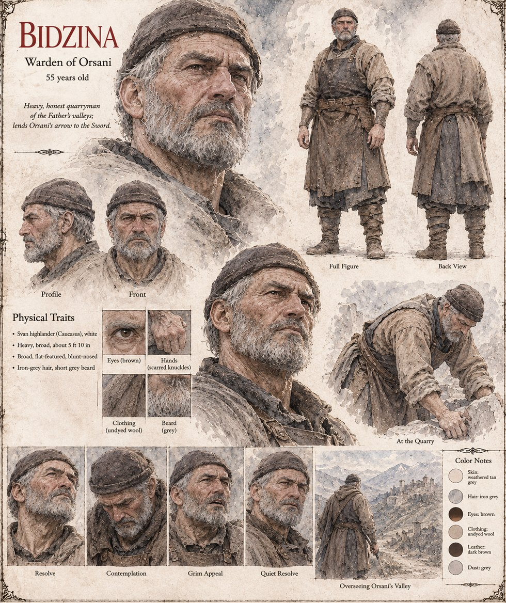

Bidzina
Warden of Orsani, valley of quarrymen · lender of the Father’s arrow · 55 on his sheet
Warden of Orsani, a heavy, honest quarryman of the Father’s, whose valley splits the basalt for the Hall of Oaths in which the Council sits. He has one scene in the manuscript, and it is not his own: on the twenty-second of Iverin, when the Elara bloc moves to void the casting voice of the thirteenth seat, Hierarch Gurgen lets the anger of the Mother’s valleys run on until it has made its own enemies, and then, in the second hour, leans toward him and murmurs that the Sword, which holds the Hall, will soon be needing something to hold it with.
Three nights later, when the Elara host has set out down the Wine Road, Gurgen carries Orsani’s arrow to the king, and tells him that Orsani’s Warden, Bidzina, had agreed in conscience to lend it to the Sword for the defense of the Hall; no vote was required, since a lending is not a loosing. The manuscript gives that agreement only in Gurgen’s mouth. The king fits it to the string on the wall and plans a small hail, the size of a thumbnail, on the leading ranks of the Elara host; a memory of his ninth year comes up through the picture, and the Custodian’s log counts the result among the dead as hail, 3,100. Afterwards Orsani’s arrow was spent, and seven were left in the glass cases of seven valleys.
The manuscript gives his valley, his build, his honesty and the murmur. The sheet’s age of 55, heavy, broad frame of about 5 ft 10 in, broad, flat-featured, blunt-nosed face, brown eyes, iron-grey hair, short grey beard, scarred knuckles and undyed wool coat with a leather apron are its own, as are its panels Resolve, Contemplation, Grim Appeal and Quiet Resolve and its scenes At the Quarry and Overseeing Orsani’s Valley. The tagline it prints, Heavy, honest quarryman of the Father’s valleys; lends Orsani’s arrow to the Sword., condenses the manuscript’s.
“a heavy, honest quarryman of the Father’s”